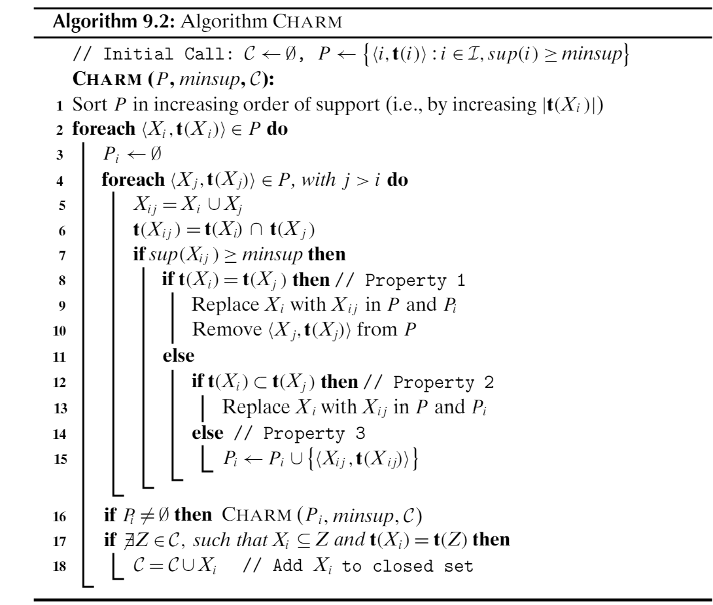
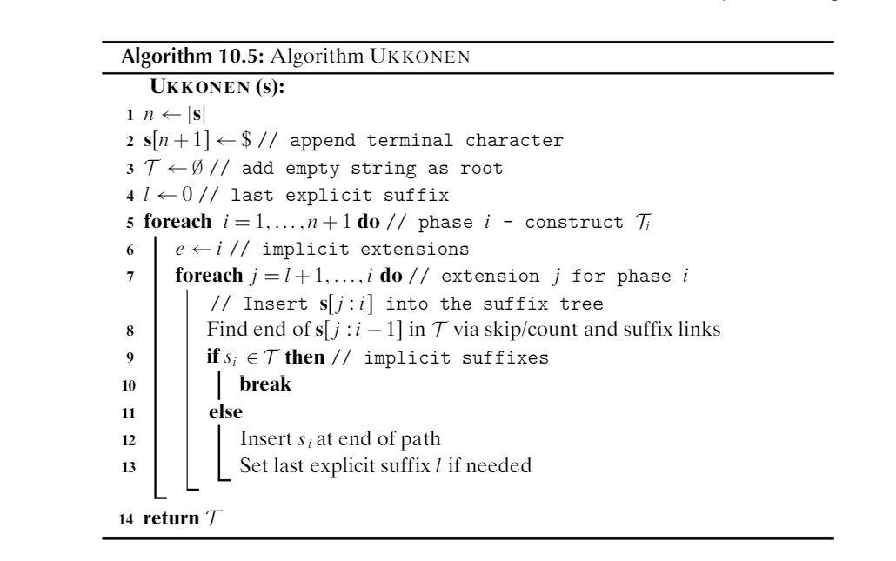

1. 34 pts Vocabulary
Give correctly-spelled terms to match the following definitions.
Itemset for which the addition of any item will result in decrease of support closure
Itemset for which the removal of any item will result in increase of support
minimal generator
Ratio of the joint likelihood of two events to the product of their independent likelihoods lift
Ratio of likelihood of
confidence
Optimization method that mimics a ball rolling down hill on a cost surface. gradient descent
Fraction of correct predictions made by a classifier, on average accuracy or purity
An association rule for which removal of any antecedent item results in loss of confidence productive
A tree structure that improves on a trie by labelling branches by strings, not just characters radix or patricia
Bayes classifier that assumes statistical independence of all attributes naive
Measure of average number of "symbols" needed to transmit a result from a probability distribution entropy
A common name for L-1 norm
Manhattan distance
Measure of the extra bits of entropy incurred when transmitting PDf p using
the optimal encoding for a different PDF q.
KL divergence
Subsequence-finding algorithm that tracks the final positions of a subseqence Spade
Itemset finding algorithm that is most similar in design to the PrefixSpan algorithm FPGrowth
Tree structure that reflects a partial ordering DAG
Number of different rules that can be derived from an itemset of 12 items 4094
Modification of Eclat/Declat that produces only closed itemsets Charm
2. 62pts Data Science Math
a. 8pts The angle in radians between vectors [2, 4, 1, 2] and [4, 2, 2, 1]
.643
b. 10pts The vector projection of the second vector onto the first in the prior question [2,4,1,2]*(20/25) = [1.6, 3.2, .8, 1.6]
c. 14pts Write a matrix representing a
d. 12pts Three models of cars are shown below, each with a popularity and a likelihood of being in the shop for repairs. If a car is in the shop, what is the chance it's a model X?
| Model | Popularity | Repair frequency |
|---|---|---|
| X | 50% | 2% |
| Y | 30% | 4% |
| Z | 20% | 5% |
Answer:
e 10pts Describe the shape of the points at exactly 2 standard deviation distance from the center of a multivariate normal with
Sphere centered at y=6, with radius 6. Origin is 6 distance from that center, so it's in the shape
f 8pts Assume a probability distribution with 4 possible events, all with probability of at least .01. What distribution will have the lowest entropy? What entropy will that be, exactly? (You may give base-10 entropy if you like; it's easier to do on a typical calculator.)
(.97, .01, .01, .01) with base-10 entropy of .0728 and base-2 entropy of .242
3. 34 pts Charm Algorithm
Below is a snapshot of Charm from the text.
First, construct a 4 transaction (labelled (0-4), 3 item (labelled A-C) database that generates 7 separate closed itemsets assuming a minsup of 1. Show the database.
Then examine how Charm works on that database. Show the final contents of
variable

A B C
123 234 124 (or equiv) 8pts
AB AC BC 8pts
23 12 24
ABC
2 4ots
C contains all 7 sets. 2pts\
Line 9 0 times 2pts; line 13 0 times 2pts; line 15 4 times 8pts.
4. 50pts Naive Bayes Classification
The following table of data for Titanic survivors gives age and cabin type for 6 people (the attributes), along with a Y/N value for survival (the class). Based on this, build a naive Bayesian model that predicts survival based on age and cabin type. Treat age as a numerical attribute, but cabin type as a categorical. Note this means a pseudocount in this attribute for one class (though not the other) and thus denominators of 6 and 5 in the categorical probabilities.
Compute the likelihood of survival and nonsurvival
for a 30 year old in a first-class cabin under your model. Show your work,
following the provided structure. Use
| age | cabin | survived |
|---|---|---|
| 5 | first | Y |
| 25 | first | N |
| 40 | first | N |
| 15 | second | N |
| 30 | second | N |
| 10 | third | Y |
| 15 | third | N |
| 30 | third | Y |
P(F|Y) = 1/3
P(S|Y) = 1/6
P(T|Y) = 1/2
P(F|N) = 2/5
P(S|N) = 2/5
P(T|N) = 1/5
P(Y) = 3/8
P(N) = 5/8
P(Y|F, age=20)
=
=
=
= .161$
6. 56pts Ukkonen's Algorithm Below is a snapshot of Ukkonen's algorithm from the text. Answer the following questions, tying the visual steps of the algorithm as displayed in our favorite simulation to the lines of the code.

a. 8pts How many nodes in the suffix tree, and which ones, might be modified by line 6?
Leaves will be modified, and this may be up to n.
b. 8pts If your answer to a is not a fixed or limited number, then given that line 6 is inside an O(n) loop, this suggests the algorithm has complexity worse than O(n). How do you reconcile this with the known O(n) complexity of Ukkonen's?
"Modification" means adjusting the e value that all leaves use; no actual change to individual leaves is needed
c. 8pts Which line performs the "move the pipe forward" step that we see in the Ukkonen's simulation?
Line 10 (or line 9/10) does this, by skipping 12-13 and going to the next i value in the outer loop
d. 8pts On what line would we add a suffix link?
This would occur on line 8, where we will find a new immediate suffix and add a suffix link
e. 8pts The simulation tracks a "remainder" variable. Write an expression, using the variables of the algorithm pseudocode, that is equivalent to "remainder".
i-l, and accept off-by-one
f. 8pts Line 8 looks like a bit of a hunt in the tree. How does the depth of the tree affect the amount of time line 8 will take? Why?
No effect since line 8 will not traverse from the root but from an immediate suffix node provided by suffix link
g. 8pts If n = 100, what is the maximum number of times line 10 might execute? Lines 12-13? Why?
Line 10 might run 100 times, but the pipe can only make 100 forward steps in all. Line 12-13 might run 101 times, but we advance l only 100 times at most.
7.56pts EM Algorithm
Below is a snapshot of the EM algorithm from the text. Answer the following questions regarding it.
a. 16pts What range of possible values might these two summations have? Explain your answer for each.
Always 1, since each point contributes a probability-distrubution resulting from line 8
Anywhere from nearly zero to n, depending on how much the points like the cluster
b. 8pts Give an intuitive description of the meaning of
How "popular" cluster i is
c. 8pts On line 11, what is the dimension of
d x d, with d the dimension of each point in D
d. 8pts How is the
It's an outer product, and since its the same vector left and right, then
e. 8pts What is the order of complexity of one iteration of the repeat loop? You may create one new variable for this, but otherwise use only variables in the code. Explain your answer.
Long tentpole is line 11, which requires k iterations, each summing n outer products, each of which require d*d operations (the vector dimension). So, O(knd^2)
f. 8pts For this algorithm, how do you think worst-case, average-case, and best-case complexities for one loop-iteration relate? Why?
Loops are all fixed-range with no options for shortening them. The three complexities are identical